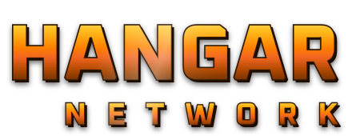
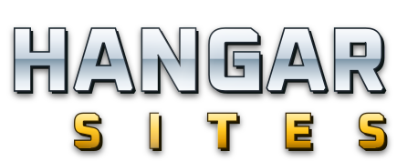
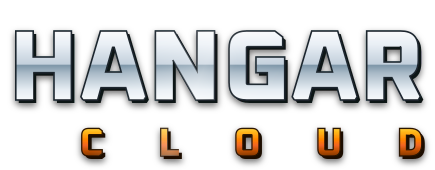
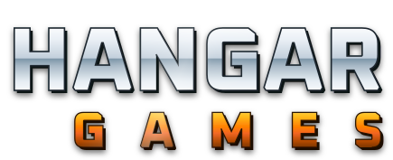
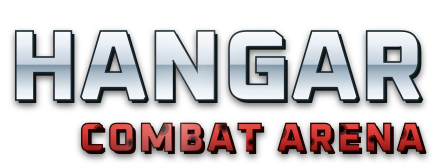
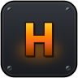

A família de logos
Letreiro redesenhado em vetor sobre as matrizes de 2004 (metal em brasa) e 2005 (cromo). O sistema: HANGAR sempre em cromo; a palavra do setor na cor do próprio setor — brasa (network/games), aço-azul (cloud) e ouro (sites). O HCA foge da regra de propósito: vermelho de guerra com buracos de bala.
Wordmarks




Sub-marcas e emblema


⚙
Vetor de verdade
Os logos são SVG com as letras convertidas em paths (Oxanium 800) — funcionam em qualquer lugar sem depender de fonte. O gerador é reproduzível e vive junto dos arquivos no acervo interno.
hangar network // wiki · design · logos
← design